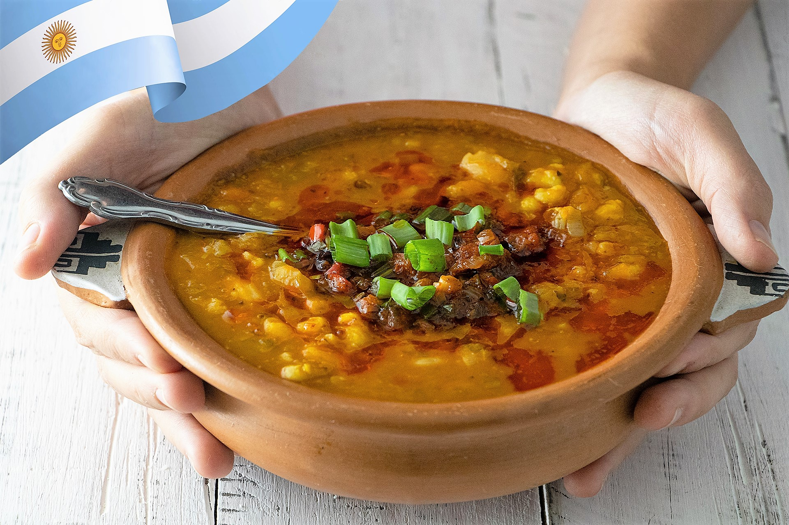

Locro

Description
Locro is a hearty and traditional Argentine stew, especially popular during national holidays. It's made with a mix of corn, beans, meats, and vegetables.
Ingredients
- 500 g white corn (hominy)
- 300 g white beans
- 500 g pumpkin (squash)
- 300 g pancetta (bacon)
- 300 g chorizo sausage
- 1 onion
- 1 leek
- 2 garlic cloves
- Paprika, cumin, salt, and pepper to taste
Steps
- Soak the corn and beans in water overnight.
- In a large pot, cook the corn and beans in water until tender.
- Add the diced pancetta and sliced chorizo.
- Stir in the chopped onion, leek, and garlic.
- Add the cubed pumpkin.
- Season with paprika, cumin, salt, and pepper.
- Cook on low heat until all ingredients are well cooked and the stew is thick.